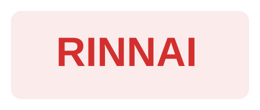

Vaillant
Marchio di riferimento per caldaie e pompe di calore, con una documentazione utile sia per il cliente finale sia per chi deve confrontare modelli e caratteristiche in modo più tecnico.
Cataloghi e documenti
Questa pagina funziona come libreria tecnica e commerciale del sito: aiuta a consultare marchi, modelli, brochure e pagine ufficiali, rafforza la credibilità del negozio e dà subito l’idea di una proposta più ordinata e più seria.
Marchi principali
La pagina cataloghi non deve sembrare un elenco freddo di link: i marchi devono essere visibili, ordinati e riconoscibili, così la consultazione diventa più forte anche dal punto di vista commerciale.
Marchio di riferimento per caldaie e pompe di calore, con una documentazione utile sia per il cliente finale sia per chi deve confrontare modelli e caratteristiche in modo più tecnico.
Bosch entra come marchio forte nella fascia caldaie, utile per sostituzioni, ristrutturazioni e confronti orientati a efficienza, compattezza e affidabilità.

CaldaieRinnai completa la proposta con una presenza chiara e attuale, utile per chi cerca comfort domestico, gestione smart e una gamma moderna da consultare con facilità.
Daikin porta nella pagina cataloghi una fascia documentale molto utile per climatizzazione e sistemi evoluti, con modelli già messi in evidenza nelle altre sezioni del sito.
Caldaie
Caldaia murale a condensazione per riscaldamento e acqua calda sanitaria, pensata per facilitare il passaggio alla condensazione anche in sostituzione di impianti esistenti. È una scheda utile per chi vuole consultare rapidamente una proposta affidabile e attuale di Vaillant.
Caldaia a condensazione murale pensata per sostituzioni e ristrutturazioni, con dimensioni compatte, buona efficienza e una documentazione utile da consultare quando si vuole confrontare una proposta chiara e facilmente vendibile.
Soluzione compatta pensata per sostituzione e incasso, con scambiatore in acciaio inox, basse emissioni e una scheda utile per chi vuole consultare una proposta concreta e molto diffusa nel mercato residenziale.
Gamma di caldaie a condensazione con cronotermostato Wi‑Fi di serie e gestione tramite app, utile per chi cerca comfort domestico, semplicità di utilizzo e una documentazione che renda immediata la comprensione della proposta.
Pompe di calore
aroTHERM plus è una delle schede più importanti della pagina documenti: monoblocco con refrigerante naturale R290, temperatura di mandata elevata e forte rilevanza commerciale per il nuovo sito. Qui il visitatore deve trovare subito il collegamento tra brand, documentazione e pagina interna dedicata.
Climatizzazione
Una proposta ad alte prestazioni per riscaldare, raffrescare e purificare l’aria, con una documentazione utile da consultare per chi cerca una soluzione forte dal punto di vista commerciale e di immagine.
Una delle linee più riconoscibili di Daikin, utile per dare alla pagina una componente più estetica e più vicina a chi cerca climatizzazione anche come scelta di design.
Una scheda molto utile perché collega climatizzazione e acqua calda sanitaria in un sistema unico, rendendo la pagina più forte anche verso chi cerca soluzioni integrate e moderne.
Una presenza importante per chi cerca soluzioni canalizzate compatte, con documentazione utile a capire subito l’impostazione tecnica e le caratteristiche principali del sistema.